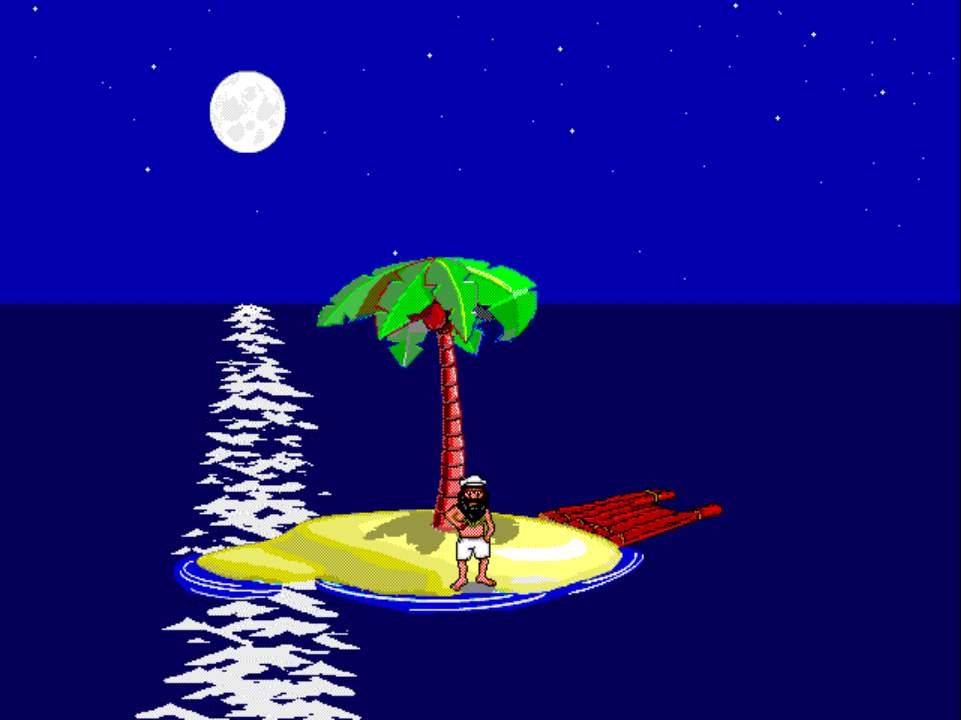

Scene · STAND 5 validated
STAND 5 — Standing at front of island, looking out over the ocean

Validated on 2026-05-04.
Pack identifiers
- ADS dispatch:
STAND.ADS scene 5 - Slug:
stand5
What this scene is
Johnny stands at the front of the island and looks out over the ocean — the look-out-to-sea idle pose in the STAND family. Confirmed by direct on-PS1 playback observation while capturing the chapter-select thumbnail; matches the prior “looks out over the ocean” caption-mapping with the front-of-island position made explicit.
Validation notes
Visual signoff passed after regenerating high and low tide packs through the STAND no-stitch fast path.
Boot route:
fgpilot stand5 lowtide 0 night 1 holiday 0 raft-stage 4 island-pos -154 54 loop seed 1.
The first no-stitch attempt faded Johnny’s legs because pure base-diff treated frame-0 static pixels as background. The exporter fast path now keeps a single-position foreground-only overlay while still skipping far-left/far-right stitch captures for simple STAND scenes.